@artportrait
Conseil du photographe :
Prendre la photo agenouillé pour obtenir un point de vue plus bas. Le sujet est donc mis en valeur grâce aux rails qui l’entourent et pour mettre l’accent sur le visage de la personne en haut de la ‘’ pyramide ‘’, pour se qui concerne la lumière, le cliché a été pris à ~18:30 pour avoir le reflet du coucher de soleil dans le bâtiment en arrière plan.
